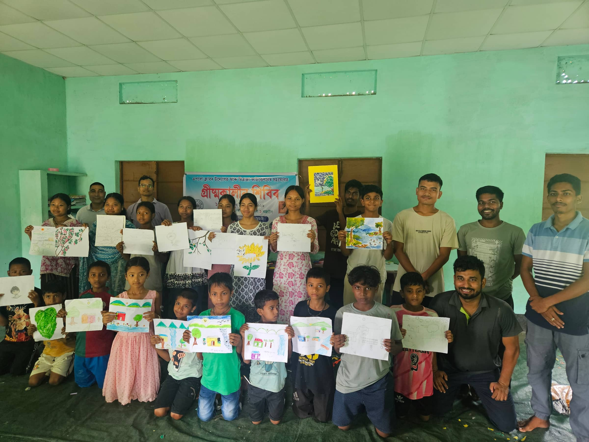
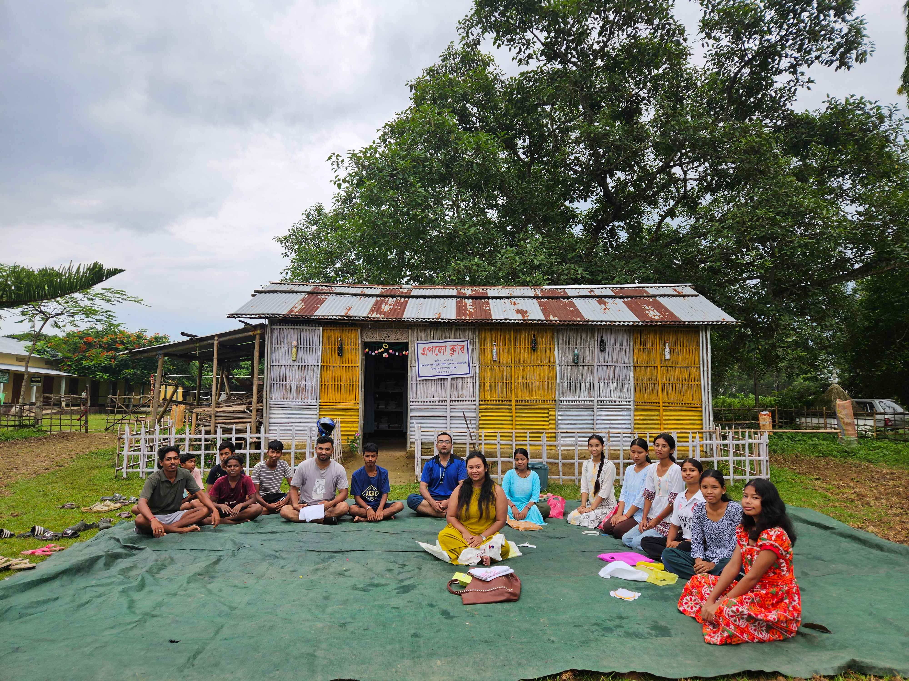
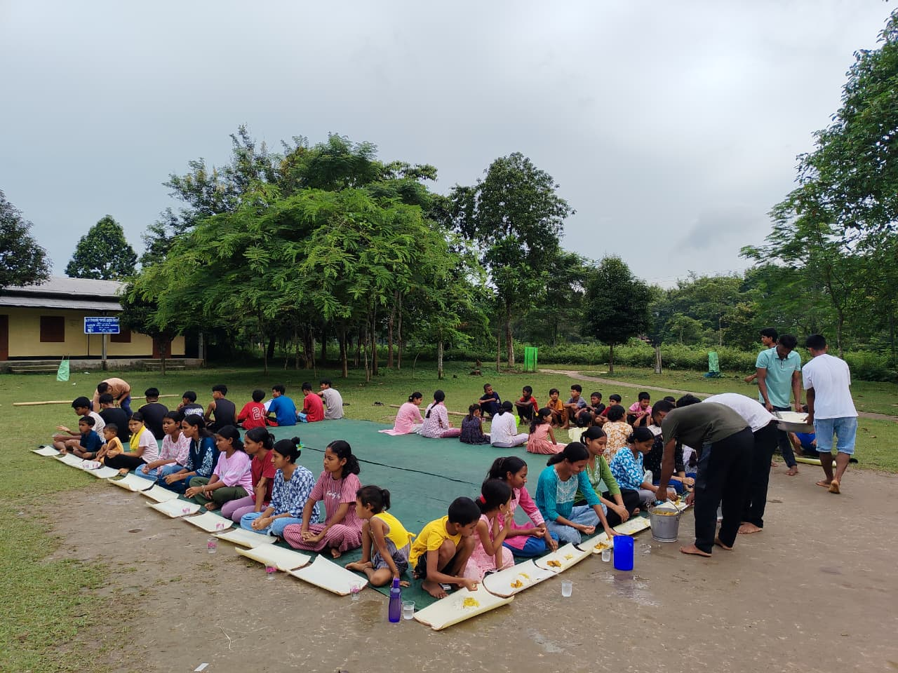
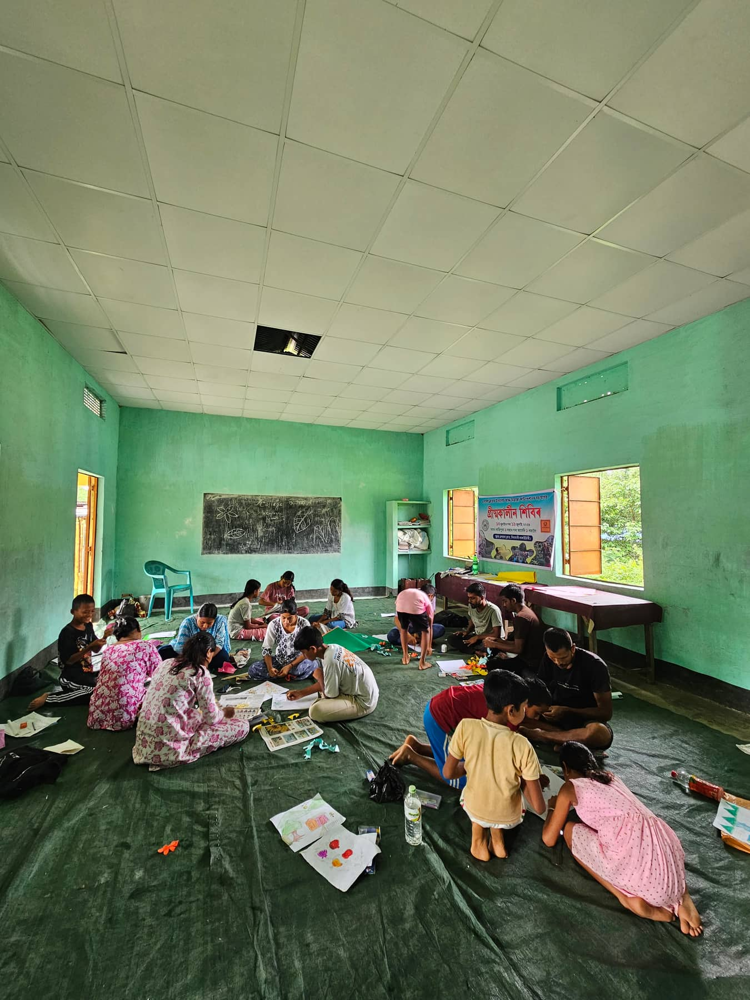
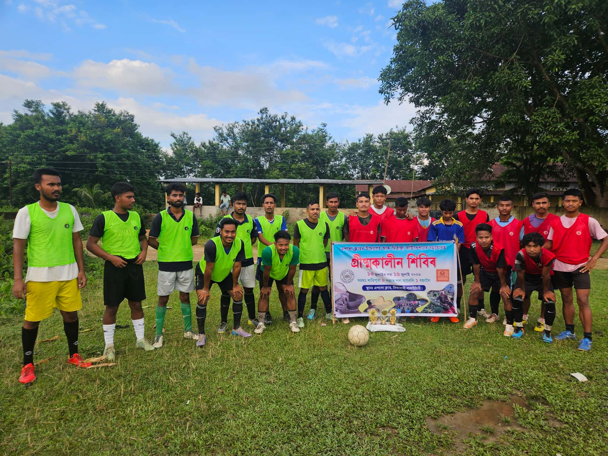
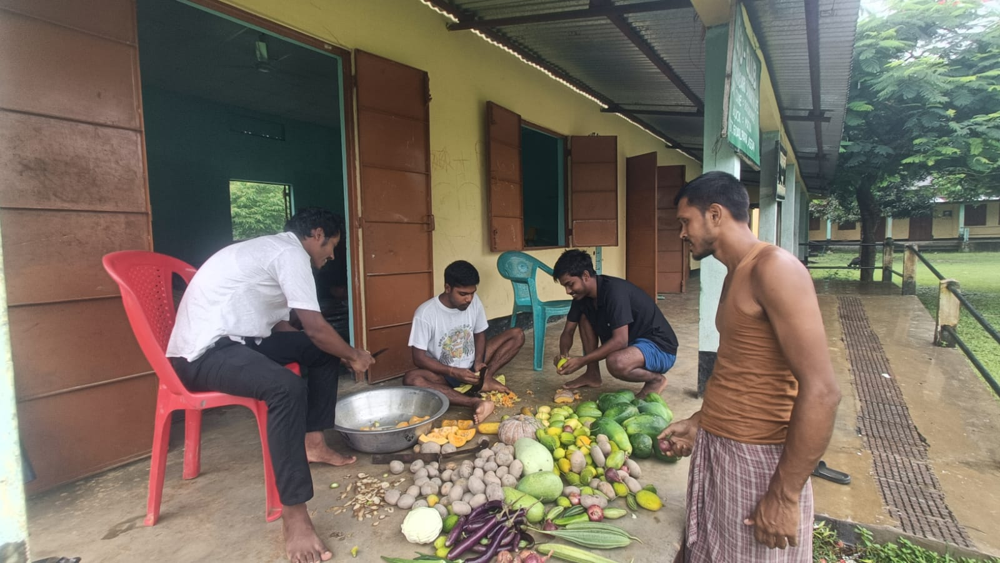

Mitraja is a community-led organisation working with displaced communities to build recognition, resources and representation, enabling people, especially young people, to lead self-sustaining change. We nurture potential and transform communities, in ways that last.
"Friendship is the only cement that will ever hold the world together."
 Creative Livelihoods
Creative Livelihoods Green Skills
Green Skills
Summer Camp, Art Day Apollo Library
Apollo LibraryIf friendship can help us navigate difficult moments in our own lives, could the same spirit of trust, listening and mutual support help communities facing crisis?
That question stayed with us.
Long before Mitraja became an organisation, its founder Jugantar had spent years learning, unlearning, and volunteering alongside youth and communities, for over a decade in Assam and Arunachal Pradesh.
Over time, we began to see something important:
Communities do not always lack solutions. Sometimes, they lack the space, recognition, resources and representation to bring those solutions forward.
That became the starting point for Mitraja.
Mitra means friend.
Ja means origin.
Mitraja grew from a small circle of friends who had leaned on one another through difficult years. Over time, that idea expanded.
Through years of engagement with communities, we saw that many of the challenges people face are interconnected, and so are their solutions. Education cannot always be separated from livelihood. Livelihood cannot always be separated from culture. Culture cannot always be separated from identity. And sustainable change cannot happen without community ownership.
Mitraja therefore works not around a single development issue, but around the capacity of communities to understand, shape and lead their own future.
 Sidhabari, Assam
Sidhabari, AssamMitraja works with communities experiencing different forms of displacement: social, economic, political and environmental. Our primary entry point is often young people between 10 and 30 years of age.
Because young people are not simply beneficiaries of tomorrow. They can become the people who carry a community's knowledge, lead its institutions and shape its future.
Our Apollo Library, however, is open to everyone, because community learning should have no age limit.
Sustainable change begins when communities are able to recognise their own strengths, access the resources they need, and participate meaningfully in decisions that affect their lives.
Know what already exists. We help communities recognise, document and strengthen practices rooted in tradition.
Connect potential with opportunity. Recognition creates a foundation for connecting communities with knowledge, skills, partnerships, infrastructure and livelihood opportunities.
Enable communities to lead. We strengthen leadership, participation and decision-making so communities increasingly design, manage and carry forward their own initiatives.
The goal is not dependency. It is ownership. Recognition, resources and representation reinforce one another: as community leadership and capacity grow, Mitraja's role reduces. That is our exit plan.
Sidhabari, Goalpara, Assam. Our work here is helping us test what community-led change can look like in practice. At the centre of this journey is a historic youth institution: Apollo Club.
The communities that would eventually build Apollo Club began their lives in the 1960s, when they migrated from East Pakistan. They were rebuilding their lives from scratch. Then, through radio sets in their camps, they heard extraordinary news: humans had landed on the moon.
For people still struggling for basic food, shelter and security, the moon landing became more than a technological achievement. It became a question of possibility: if human beings could reach the moon, what could we build here?
In 1982, young people from the community built Apollo Club. It became a space for youth, ideas, learning and collective action. Over the decades, Apollo went through periods of activity and dormancy. After COVID, the historic space had largely become a store room, until the community decided to bring it back on 4 January 2026.
Not just reopening a building. Reviving a historic space of resilience.

Apollo Club, SidhabariSix steps that guide every young person who walks through Apollo Club's doors, from a first spark to community ownership.
Know yourself
Develop yourself
Explore possibilities
Lead change
Create value
Take responsibility
Before Mitraja ran a single session, Sidhabari's youth wrote down what they wanted, in their own hand. A library, computer classes, sports gear, free Wi-Fi: most of it is a real programme today.

 Apollo Library
Apollo LibraryThe Apollo Library wasn't simply brought into the community. The community built it. Bamboo came from the community. Labour came from the community. Books came from the community.
Mitraja facilitated the establishment of the Apollo Library, transforming it into a learning hub that extends beyond books. The library serves as a foundation for addressing both academic and non-academic challenges. Leadership development is promoted through training and capacity building for community youth in library management, in collaboration with organisations and initiatives such as the Free Library Network, CML (an initiative of Tata Trust), Snehjori, and others.
The result is more than a library. It is a living community resource.
Mitraja has built relationships across Hajong, Garo, Dalu, Koch and Bengali-speaking communities.
Apollo Club, established in 1982, was brought back to life through community participation.
Local bamboo, labour, books and contributions became the foundation of Apollo Library.
Community knowledge-keepers and local resource people contribute their expertise to activities and learning.
During Summer Camp 2026, the community contributed 45.74% of the total budget through cash and in-kind contributions.
The objective is not simply to increase attendance. It is to increase the number of people who plan, contribute, decide and lead.
Our work is shaped by what communities identify as meaningful and useful.

Summer CampA community-led learning experience bringing together children, youth and community members through learning, creativity, health, sports and exploration.
View Activity →Apollo LibraryA community-built learning and knowledge space supporting reading, exploration, workshops and collective learning.
Explore Apollo Library → Creative Livelihoods
Creative LivelihoodsHands-on learning in skills such as crochet, embroidery, bamboo craft and pottery, connecting local skills with creative livelihood possibilities.
View Activities → Youth Workshops
Youth WorkshopsCommunication, health and hygiene, arts, sports, local ecology and other locally relevant learning experiences.
View Activities →Change begins with listening, grows through empathy and ownership, and moves forward with a shared vision. See all recent activities →
Click any photo to view it full-screen and step through the rest.









Full Newsletter & Summer Camp Gallery Field Notes & Process Photos
Community work is a process of learning. Explore our stories, field notes, publications and newsletters from the communities we work with.
Mitraja believes communities should have the resources, knowledge and networks to shape their own futures. You can contribute in different ways.
Support community-led learning, youth development, livelihood initiatives and community spaces.
Donate →Bring expertise, resources, networks or institutional support to communities.
Partner with us →We are here to listen, connect resources and help create the conditions for communities to lead.